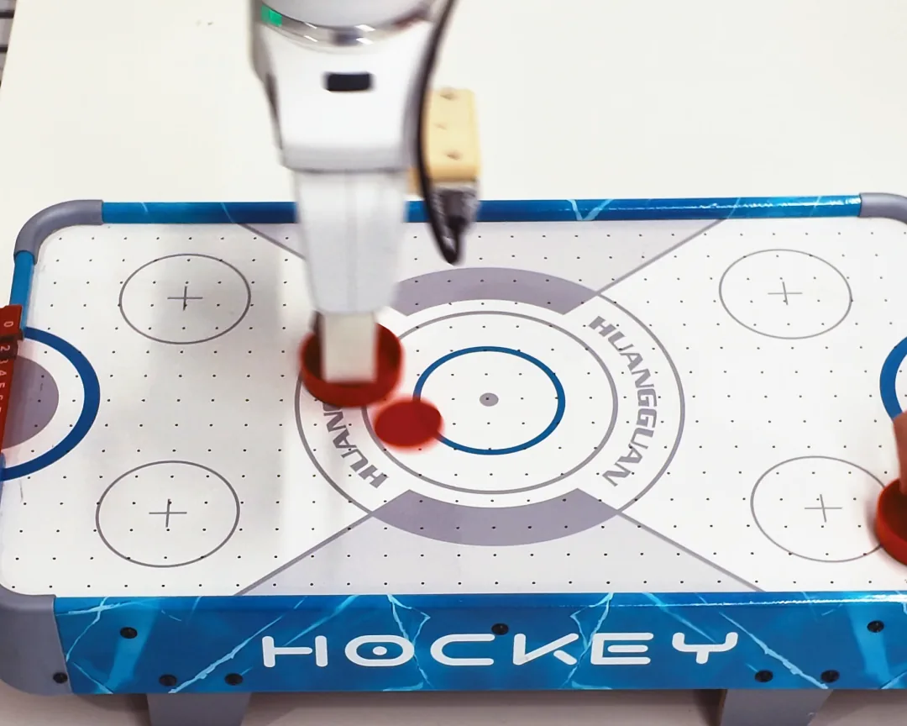
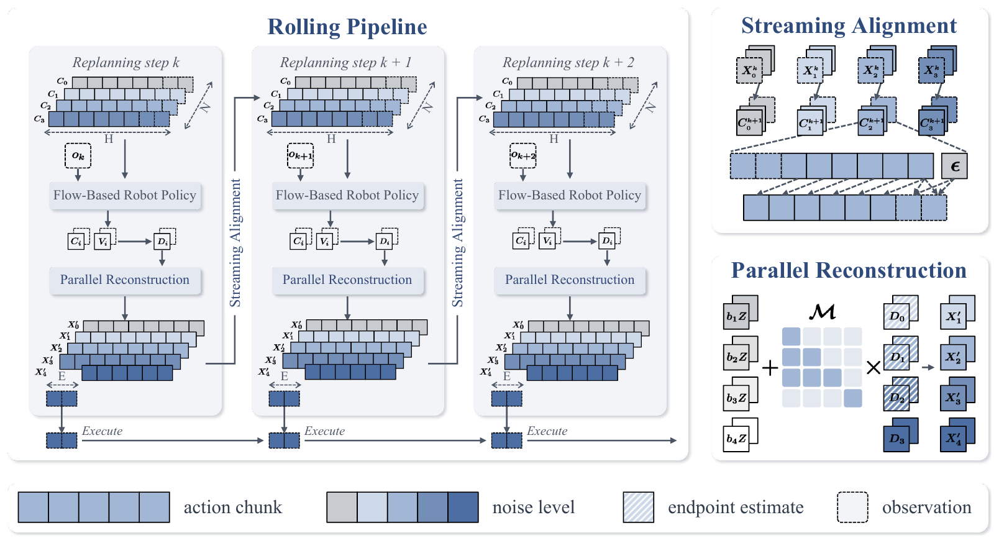

OneFlow
让机器人来得及回击
冰球还在滑行，机器人却要等多步去噪完成才能出手。OneFlow 把这些步骤分摊到连续几轮重规划中。初始化后，每次收到新观测，只需一次前向传播就能给出下一段动作。
Parallelizing Flows for One-Pass Action Generation



Method
把多步去噪分摊到
多轮重规划
机器人每次会预测一整段动作，但通常只执行开头几步，随后就用新观测重新规划。假设一次预测 8 步，只执行前 2 步，那么下一轮仍要规划原来的第 3 至第 8 步。OneFlow 利用这段重叠，保留上一轮在各个噪声水平下的动作估计。
流式对齐 Streaming alignment
机器人执行两步后，OneFlow 将各噪声水平的动作块同步前移两格，保留重叠部分。对新出现的末尾两格，它延伸原有的末端动作估计，并按当前阶段的噪声水平补入新噪声。
并行重建 Parallel reconstruction
对齐后的动作块仍带着上一轮的观测信息。OneFlow 把它们组成一个批次，用最新观测一次预测所有阶段的速度，再据此重建中间状态和可执行的动作块。这样，较早的观测参与形成动作，较新的观测还能修正即将执行的部分。整个过程沿用预训练策略的权重。
查看论文中的完整方法图


Results
一次前向传播，
任务成功率如何？
在 RoboTwin 2.0 的 50 个任务上，Fast-WAM 使用原生采样器时，从十步去噪减到一步，平均成功率从 89.4% 降到 40.8%。OneFlow 保留十个去噪阶段，每轮只做一次批量前向传播，平均成功率达到 91.0%。
论文表 3。每个任务分别在标准场景和随机化场景测试 100 次，取两种设置的平均成功率。
一次前向传播需要多久？
OneFlow+ 在并行去噪的基础上加入执行引擎，通过 CUDA Graphs、算子融合等优化进一步缩短等待时间。在 A100 上，Fast-WAM 的动作生成耗时从原生十步的 503.53 ms 降到 16.62 ms。
| 策略 | 原生多步 | OneFlow | OneFlow+ |
|---|---|---|---|
| GR00T N1.7 | 111.73 | 57.95 | 9.77 |
| Fast-WAM | 503.53 | 103.20 | 16.62 |
论文表 4。在 A100 上预热后按单样本计时，从读取 CPU 上的观测到返回解码后的 CPU 动作。机器人通信和机械执行另计。
回到真实的冰球桌
同一个 GR00T N1.7 策略在 Franka 机械臂上迎击来球。使用原生采样时，机器人回击了 6% 的来球。使用 OneFlow 后，回击率达到 34%，加入执行引擎后达到 66%。每种方法各测试 50 轮，每轮 10 个来球，只有把球击回发球一侧才计入回击。
论文表 5。实机使用 RTX 4090，三种方法的模型推理延迟中位数依次为 46.99、27.98 和 11.97 ms。
References
资料来源
Parallelizing Flows for One-Pass Action Generation
冰球录像帧取自论文图 1，方法示意见图 2。论文表 3 至表 5 分别给出仿真成功率、动作生成延迟与实机结果。
OneFlow 项目网站
动作窗口示例参考项目站 Method 栏目中每次预测 8 步、执行 2 步的演示。Key insight 栏目展示了去噪如何跨轮次推进。项目站源码（需仓库权限）